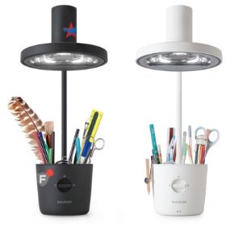
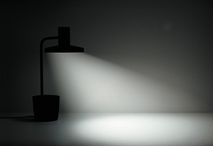
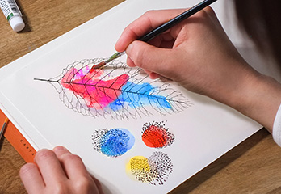
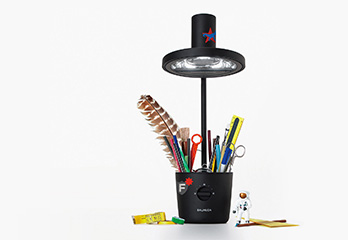
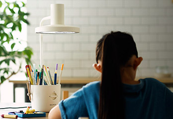
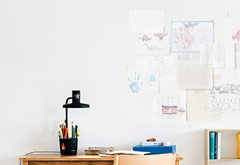

- 아이들의 눈을 지키는 빛
- '아이들의 눈을 지키고 싶다'는 생각에서 시작된
BALMUDA The Light
태양광과 가장 가까운 스펙트럼을 재현했다는 게 특징입니다.
기존의 백색 LED에서는 잃어버렸던 사물 본연의 색을 아이들이 볼 수 있게 되었습니다
- 프로의 현장에서 탄생한 데스크 라이트
- 태양광 LED 데스크
BALMUDA The Light는 손 앞에 그림자를 만들지 않는 빛을 실현.
시선을 부드럽게 보호하여 집중력을 높여줍니다
-

손 앞에 그림자를 만들지 않는 빛
의료용 수술 조명에서 힌트를 얻어 개발한 BALMUDA The Light.
독자적으로 개발한 빛 확산 기술로 빛을 사선으로 멀리 비추어
손 앞에 그림자를 만들지 않습니다.
-

선명한 색감
태양광 LED는 미술관 같이 정확한 색감을 보아야 하는 환경에서 주로 사용되며 태양광의 스펙트럼을 그대로 재현하여 자연광에 가장 가까운 빛을 제공합니다.
-

툴박스 & 스티커
연필, 가위 등 툴박스에 아끼는 문구를 넣고
빛으로 연출하는 것이 가능합니다.
본체에 붙일 수 있는 전용 스티커도 함께 포함되어있습니다.
스티커를 조합하여 나만의 데스크 라이트를 만들어 보세요.
-

성장기의 눈과 빛
BALMUDA The Toaster의 스팀 테크놀로지와 온도 제어 기술로 냉동 보관된 빵도 간편하고 맛있게 데워먹을 수 있습니다. 평소에 사용하던 작동 모드에서 1분만 더 추가해 보세요. 냉동되었던 빵도 방금 만든 빵처럼 맛있게 되살아납니다.
-

창조적이기를
아이들이 조금이라도 자신의 개성과 창조성을 의식하는 계기가 되었으면 하는 마음을 담아 BALMUDA The Light는 만들어졌습니다. 그리고 이 빛 아래서 보는 것이 되도록 재미있고 즐거운 시간이 되길 바라고 있습니다.
-
본연의 색을 볼 수 있게 해주는 이상적인 빛
태양광 LED는 의료현장이나 미술관 등 정확한 색감을 보아야 하는 현장에서 주로 사용됩니다. BALMUDA The Light는 최고 수준의 연색성으로 사물이 지닌 본연의 색을 보여주기 때문에 아이들이 원색을 보는 감각을 키울 수 있습니다.